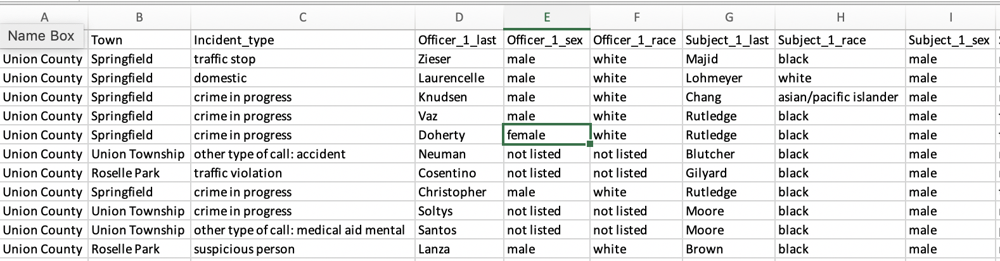
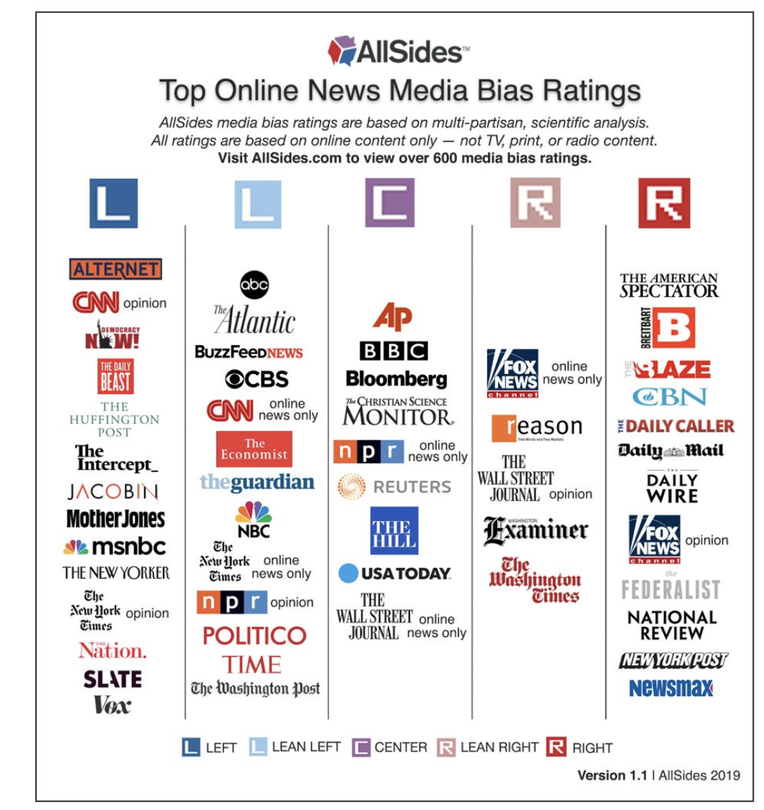
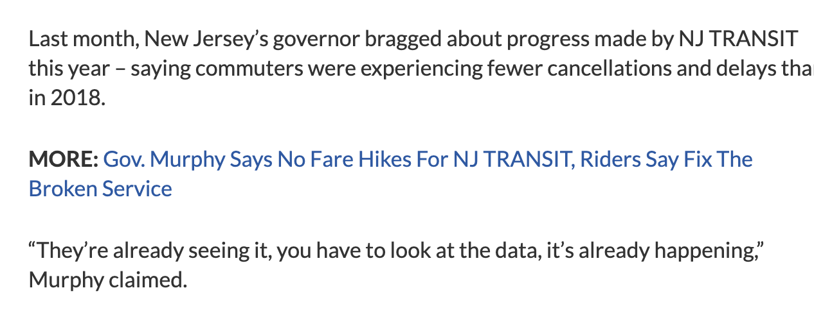
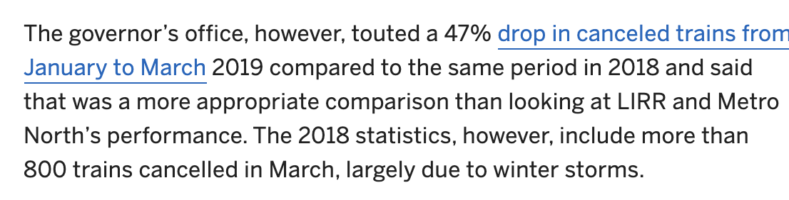
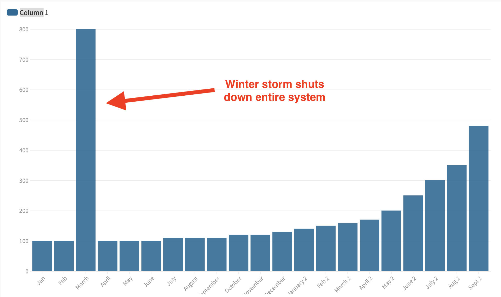

<h1 align="center">DATA! </h1>
<img src="https://media.giphy.com/media/msKNSs8rmJ5m/giphy.gif" width="40%"><br>
### Congrats. You have officially made it to the second half of this class: The wonderful world of data.
Data is the quantification of anything. And today, everything is quantified. It is currently the most valuable commodity on the planet, and likely will remain so for the foreseeable future.
Data is so valuable because it is incredibly powerful, even in simple ways.
Here are some things you could find out about me using public info:
<img src="assets/youngsteve.png" width="50%"><br>
### Stephen Stirling
#### * `36 years old`, lives in `South Orange, NJ`. Also lived in `Maplewood,` `Jersey City` and `New York` in the past decade. `Owns` a home.
#### * `Married`, with `two kids`. Parents `both alive`, both `Scottish immigrants`, who `live in NJ`. Both recently `registered to vote` for the first time, indicating they likely `became citizens recently.`
#### * `Registered to vote` in NJ. `No party affiliation`. Voted in elections from `2015 to 2019.` Previously `registered as a Democrat` in New York City from 2005 to 2014
#### * Occupation is `reporter` at NJ Advance Media. Employed there since 2009. Previously worked at TimesLedger, Village Voice, Daily News, FiveThirtyEight.
<hr>
In and of itself, that's not particularly valuable.
BUT, collect those data points for lots of people in a spreadsheet, and suddenly you have a profile of a certain place, or a certain group of people.
That's huge for political organizations, businesses or anyone else who wants to make money off you or convince you to do something.
## As journalists, we can use the same idea to hold the power to account.
 <br>
If I know the race and sex of a police officer, AND the race and sex of a use-of-force subject, I can potentially tell a meaningful data story about how police use force on people of different races.
Today, data is the backbone of the majority of the big journalism investigations you know.
#### But before we go any further, there's something you need to know.
<hr>
# Data doesn't lie. But people do, and they lie with it all the time.
#### Bad or misrepresented data is everywhere.
#### If you take one thing from this class let it be this: As a journalist, you are a paid skeptic. Question everything, especially data.
## Never assume data is correct. Question it.
#### Bad data example 1: The Uncomparable

This chart is bad simply because it is comparing things that aren't comparable along a single variable. Would you consider the `New Yorker` to be equivalent to `Breitbart?` `Vox` to the `Fox News Opinion` section?
It doesn't even have to be right vs. left. If you know anything about the `New York Post's` news operation, you know it's miles ahead of the `Daily Caller` on the right or `Alternet` on the left.
This tells a visual tale to the observer that is a complete misconception.
<hr>
#### Bad Data example #2: Vapid Nonsense
<br>
There are an army of companies that want nothing more than for you to publish their bullshit datasets. Their goal is typically to monetize the listicle, and/or cycle you back to a product they're selling.
#### Check for methodology. If they have it, read it.
#### Ask questions.
<br>
Safewise publishes this every year. But how do you quantify safety? Can you?
Also, for a time, one of the variables was how many security systems were owned in a given area...
#### Because...
#### Safewise makes its money from home security companies!
<hr>
#### Bad data example #3: People who use data to lie or mislead.
<br>
#### Which is great news! It's just highly misleading.
 <br>
#### Here's why:
<br>
#### So what Murphy is saying is technically true, statistically, but it's also supremely misleading.
<br>
### So... QUESTION EVERYTHING, INCLUDING (AND ESPECIALLY) YOURSELF
<br>
# Let's play around
<br>
#### So now let's go through some of the stuff you can do with data. Download these two files:
<br>
### <a style="color:blue;" href="assets/deadfolks.csv" >Dead Folks!</a>
### <a style="color:blue;" href="assets/njfolks.csv">NJ Folks!</a>